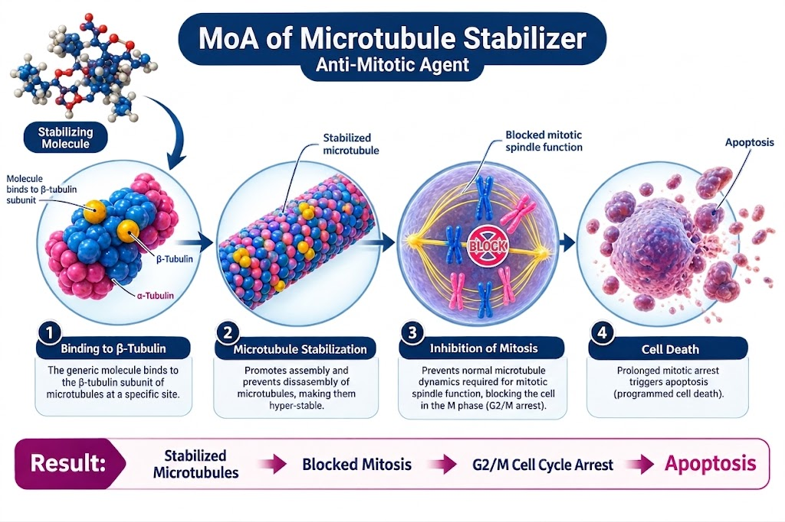

Sanofi
Jevtana (cabazitaxel) is a taxane chemotherapy agent used in the treatment of metastatic castration-resistant prostate cancer (mCRPC). It is particularly used in patients whose disease has progressed during or after treatment with docetaxel and an androgen receptor-targeted therapy.
Jevtana
Cabazitaxel
Taxane
Intravenous
Sanofi
Cabazitaxel is a taxane that binds to tubulin and promotes microtubule assembly while inhibiting microtubule depolymerization. This stabilizes microtubules and disrupts their normal dynamic function during cell division. The resulting disruption of the mitotic spindle leads to cell-cycle arrest and ultimately cancer cell death. Cabazitaxel has activity in prostate cancer cells that have developed resistance to other taxanes.

| Trial | Setting | Outcome |
|---|---|---|
| TROPIC | mCRPC after Docetaxel | Improved Overall Survival vs Mitoxantrone |
| PROSELICA | mCRPC after Docetaxel | 20 mg/m² demonstrated non-inferior Overall Survival to 25 mg/m² with a more favorable safety profile |
| CARD | mCRPC after Docetaxel + AR-targeted Therapy | Improved Overall Survival and PFS vs an alternative AR-targeted therapy |
Recommended dose: 20 mg/m² IV every 3 weeks in combination with prednisone or prednisolone.
| Recommended Dose | 20 mg/m² IV Every 3 Weeks |
|---|---|
| Route | Intravenous Infusion |
| Combination | Prednisone or Prednisolone |
| Schedule | Every 3 Weeks |